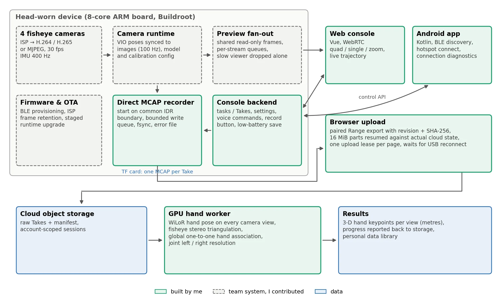
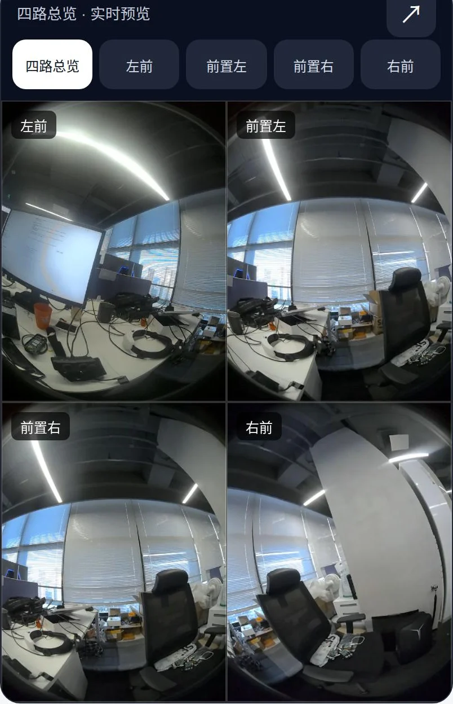
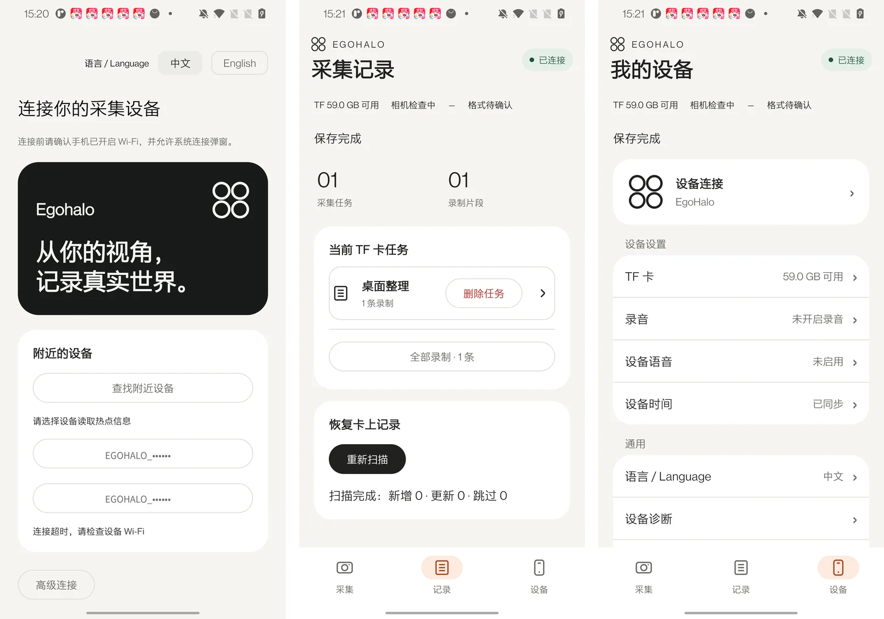
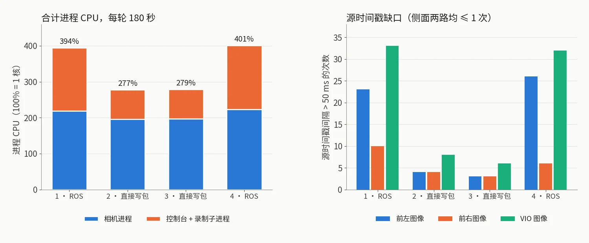
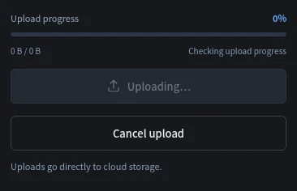
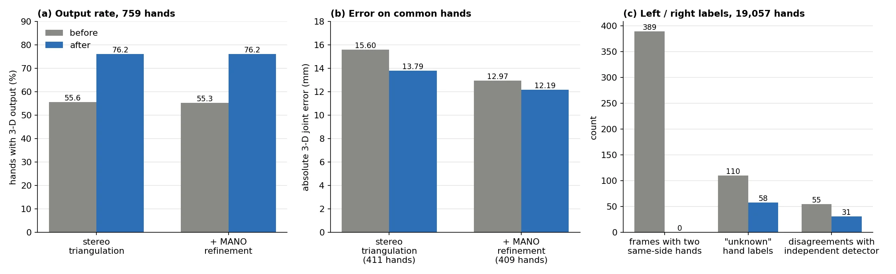
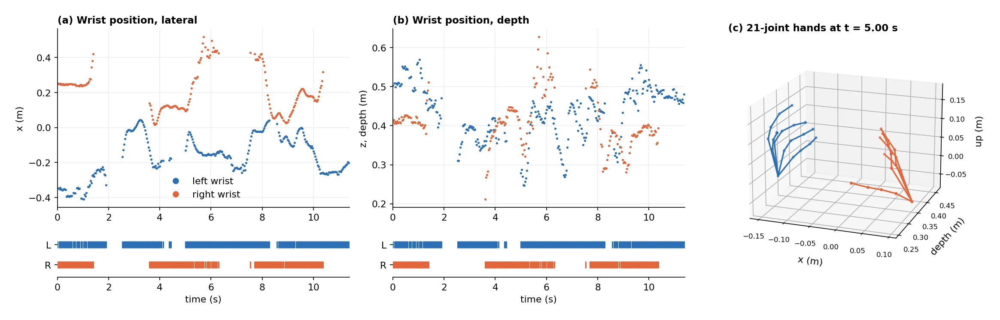

EgoHalo 设备与数据工程
EgoHalo 是一台四路鱼眼的头戴采集设备。我负责的是从采集员拿起设备，到数据在云端变成手部三维标注的整条链路：设备上的采集控制台（后端、网页、原生安卓 App、C++ 直接写包）从零开发，浏览器上传独立完成，云端手部处理、相机运行时、固件和 OTA 也有我的部分。
- 采集控制台从零搭建，约 3.2 万行
- 339 / 368 次提交
- 设备端直接写 MCAP 相对 ROS 录制
- −30% CPU
- 手部双目三维输出率（公开数据集）
- 55.6% → 76.2%
- 做什么
- 头戴四路鱼眼采集设备的整条数据链路：连接、预览、录制、取回、上传、云端手部三维处理
- 我做的
- 采集控制台 339 / 368 次提交（约 3.2 万行：Python 后端、Kotlin 安卓、Vue 网页、C++ 录制器）；浏览器上传 54 / 54；云端手部处理 21 / 46；参与相机运行时、固件和 OTA
- 技术栈
- MCAP · ROS 2 · H.264/H.265 · WebRTC · Kotlin · BLE · Vue · WiLoR · stereo triangulation · Buildroot
- 实测
- 直接写包相对 ROS 录制，合计进程 CPU −30%；起录 2.67 → 0.82 s；手部双目输出率 55.6% → 76.2%，三维误差 15.6 → 13.8 mm
- 难点与解决
- 设备端直接写 MCAP 时，从任意编码帧开录会让回放器在首个关键帧前解不出画面。我让每路等到参数集和 IDR 齐备，取共同边界后才确认开录。
- 进展
- 控制台覆盖 EgoHalo、Insight 7 / Duo 和独立 RDK 双 UVC；左右手联合判定已上线云端；录制端实测零丢帧
系统全貌
设备上跑着相机运行时（感知、编码、VIO）和我写的控制台后端；采集员用网页或安卓 App 连接设备、看预览、起停录制，每次录制（Take）在设备 TF 卡上存成一个 MCAP。录完在浏览器里把 Take 直接传到云存储，云端 GPU worker 自动算出每路相机的手部关键点和双目三维手部。


难点与解决
下面几条都从提交记录和当时的验证报告里整理，按“现象 → 排查 → 根因 → 解决 → 验证”写。
起录时关键帧比“开始时刻”先到，被直接丢掉
- 现象：同一版软件实测 12 次：两次录制分别丢了 11 帧和 25 帧，一次直接报“起录超时，未确认四路 IDR 就绪”。
- 排查：写了一个七路 C++ 采样器，和录制同时订阅相机实际发出的每个时间戳；在共同时间区间内，对“相机发出”和“录进包里”的时间戳多重集做双向差集，首尾帧不计。这样能把“相机没发”“录制没录”“采样器没收到”三种情况分开，源端帧率不足单独统计。结论是丢在录制端，不在源端。
- 根因：四路起录要等一个“从时刻 T 开始”的回复，而视频帧走的是另一组 DDS 读者。约定的起始关键帧可能在回复处理之前就到了，旧代码在 T 未知时直接丢弃收到的帧；起录阶段的 QoS 又是 best-effort、队列只有 30。
- 解决：等待 T 的期间，每路视频保留最近 120 帧，T 一到按时间戳排序后补写进包；视频话题改为可靠传输、队列 120，VIO 话题可靠传输、队列 300。
- 验证：修复后 16 次（MJPEG 和 H.264，含两次 400 秒长录）加发布版 2 次，全部完成，录制端丢帧 0；四路 H.264 的首帧时间差 0.066–0.135 秒。
100 Hz VIO 位姿流：频率漂移、重复时间戳、断网时时间戳跳变
- 现象：60 秒 H.264 基线里，100 Hz 的 VIO 位姿只有 97.06 Hz，有 11 个重复时间戳、44 处间隔；MJPEG 基线 12 个重复、50 处间隔。
- 排查：按线程采集 /proc 统计和相机流水线缓冲池快照；在发布单元里每 10 秒输出采集间隔、编码数、JPEG 队列满、编码失败和最大处理时间，把源端丢失和录制端丢失分开。
- 根因：发布循环靠 sleep 定时，频率会漂；没有新估计时就把上一个位姿再发一次。另一个问题后来才发现：NTP 断开时代码把时间偏移重置为 0，正在跑的流从墙钟时间切到单调时间，恢复同步时再切回来，时间戳可能倒退。
- 解决：按单调时钟的截止时刻调度，过期的槽直接跳过，拒绝重复的源时间戳，缺的位姿不用旧值填；同一会话内保持已建立的时间偏移，NTP 断开和恢复都不改，只有新会话才重新取偏移。顺带修了关闭时的崩溃：先唤醒并 join 帧率线程，再析构。
- 验证：候选版 60 秒 H.264：6,001 条、99.07 Hz、重复 0；H.264 和 MJPEG 各 60 / 300 / 600 秒、各两轮共 12 次验收全部通过，时间戳倒退 0。
实时轨迹会自己清空
- 现象：用户反馈轨迹自己清掉。一个只读订阅者 35 秒收到 1,050 个位姿，其中有 3 次时间戳倒退，分别是 707 ns、708 ns 和 2,000 ns；服务端的轨迹计数从 23 跳到 26，缓存每次掉到个位数。
- 排查：把原始话题和服务端的轨迹快照并排看，坐标系名称始终是 odom，排除了坐标系切换。
- 根因：只要时间戳比上一个小就整条清空，纳秒级的乱序也被当成 VIO 重启。
- 解决：小于 1 ms 的倒退视为抖动，保留最大时间戳、丢掉偶发的乱序点；只有倒退至少 1 秒、且之后连续 3 条递增，才判定为时钟重启；把清空原因和抖动次数作为计数暴露出来。同一处把 500 ms 一次的全量轮询改成 WebSocket 增量推送。
- 验证：真实页面 75 秒：新增 2,254 个位姿，抖动计数从 1 到 4，轨迹计数始终为 1，缓存保持 2,000 个点；位姿推送 30 Hz，平均每条 348 字节。
多张 TF 卡共用一个索引、删除可能越界
- 现象：所有卡的录制索引放在同一个数据库里，检查文件缺失时会把另一张卡上的录制标成已删除；删除任务时对每个包的父目录做递归删除，而导入的包可能共用父目录或就在存储根下，改名或符号链接还可能让它删到别的录制。
- 解决：每张卡按卡 CID 加文件系统 UUID 建独立索引，用卡状态令牌拒绝过期请求，录制或保存期间不切换索引；起录前确认的挂载一直带到写入和保存，换卡则中止或标记 Take；删除先在解析符号链接之前检查存储根下的原始路径，所有路径都校验通过才动手，只删索引里的 Take，目录为空才删目录。
- 验证：实机换卡后录一条 34.957 秒、930,280,129 字节的 Take，读回 23,502 条消息；删除逻辑有单元测试覆盖。
语音指令在识别繁忙时丢失
- 现象：识别和读麦克风进程输出在同一个循环里，解码一慢管道就满，采集停顿、丢音频，溢出消息直到进程退出才被读到。
- 排查：在设备上用真实代码同时加载中英文模型测量：平均 0.59–0.63 倍实时，按节奏回放时单批 P95 120 ms、P99 148 ms、最大 297 ms；管道容量 65,536 字节，只够 0.341 秒音频，实测最多积压 52,000 字节，一次慢批次就可能溢出。
- 解决：独立读线程持续排空音频和错误输出；之后发现“音频超过 1 秒就过期”会把已识别的指令也丢掉，于是改成麦克风只读一次、转换一次，分发给中文和英文两个独立识别线程，各自 1 MiB 上限、溢出只重置该语言，用采集代次而不是音频年龄来作废旧结果。
- 验证：真实管道测试两轮共 33 个，其中一个对照测试在原读取方式下必然失败。
采集控制台与安卓 App
控制台运行在设备的 X5 主板（8 核 ARM，系统由 Buildroot 构建）上。我从初版 Web 控制台做起，把连接设备、实时查看相机和轨迹、任务录制、取回数据放进同一套接口；后来加了原生 Android 端，用 BLE（低功耗蓝牙）发现设备、Wi-Fi 热点连接，网页和 App 共用设备的状态与录制接口。客户端断线或切页不影响后端录制。
预览可切四宫格、单路和放大；H.264/H.265 模式下切换布局不断开四路编码连接和解码器。实时轨迹读取相机端与图像同步的 VIO 位姿，带序号和进程代次，控制台据此去重并识别设备端轨迹重启。


原生安卓 App
手机浏览器连设备热点要手动切 Wi-Fi、手动输地址，现场很容易卡住。安卓 App 用 BLE 扫描附近设备，读到设备的热点信息后一键连接；连上后加密记住热点名称和 BSSID，下次精确指定同一热点、复用系统已批准的记录，重连约 0.6 秒、不再弹系统确认。连接页保留最近 5 次尝试的诊断，预览走 WebRTC 低延迟模式、每路单独重连，界面中英文切换。实机验收时稳定段渲染约 28–30 fps，所查窗口丢帧 0。


设备端功能
| 功能 | 做法 |
|---|---|
| 离线语音起停 | Vosk 中文、英文两个识别线程并行听同一路 16 kHz 音频，只匹配完整口令，先命中的语言立即提交并让另一路结果失效；也可切换到单路 Sherpa 双语模型 |
| 实体录制键 | 长按起停，手势和时长可在 OTA 设置里配置 |
| 低电量保护 | SOC ≤ 10% 提醒；SOC ≤ 1% 且原始放电电压 30 秒均值 ≤ 3.3 V 时禁止新录制、保存当前 Take、同步文件系统、播报后再关机；接上充电器即取消 |
| 录制命令恢复 | 开始请求的响应丢失后重试，不会重复创建 Take |
| 录音 | Take 音频写进同一个 MCAP，停止时先冻结音频再排空队列 |
多路起录与直接写包
EgoHalo 在设备本机直接写 MCAP，不经过 ROS 录制。四路视频各自编码：如果按下录制就开始写包，某一路可能从 P 帧开始，回放器在它的第一个关键帧之前什么也解不出来，四路的有效起点也对不齐。
处理方式是开录前先等：H.264/H.265 每一路都收到完整参数集和 IDR，所有选中的相机都到达可解码起点后，取共同的起录边界，再向用户确认“已开始录制”。写包沿用源时间戳、ROS 消息类型和原有话题，与 ROS 录制的包结构一致，下游读取方式不变。MJPEG 每帧都是独立 JPEG，原样写入即可。
- 就绪判定每路等到参数集和 IDR，取共同起录边界
- 相机本地写包相机进程内把同一份 CDR 送入独立写线程
- 终止与落盘排空写队列、关闭 MCAP、逐文件 fsync，报告实际结果
- 一份编码，两条支路。编码数据从硬件缓冲只拷出一次，预览和录制共享同一份只读帧、各自入队。预览队列每路上限 8 帧 / 4 MiB，发送积压超过 200 ms 只断开这一路预览、等关键帧重连；不请求相机 IDR，不碰录制缓存。
- 缓存耗尽不报成功。写线程用配置的字节预算；耗尽时停止接收新样本，尽量写完已入队数据并关闭文件，写入 recording-error.json，这条 Take 保持待恢复，不能通过完整录制导出。
- 控制进程崩溃不丢锁。控制子进程通过 Unix socket 的 SCM_RIGHTS 把录制锁的文件描述符交给相机进程；即使控制台异常退出，相机在关闭写包前仍持有锁，控制连接中断就停止并关闭异常包。
ROS 录制路径的起录延迟
在直接写包之前，录制走 ROS：每次按开始都要重新加载 ROS 环境、启动完整的 ros2 命令行，三次平均 2.671 秒才真正开录。我把录制放进常驻子进程，直接调用 rosbag2_py 的 Recorder，平均降到 0.824 秒（−69%）。
直接写包时起停各花多少时间
| 阶段 | 耗时 |
|---|---|
| 开始请求返回（只表示接受） | 0.368 |
| 实际首帧确认 | 0.937 |
| 轮询看到“录制中” | 1.371 |
| 停止请求返回 | 0.228 |
| 进入刷盘保存阶段 | 0.557 |
| 停止 → 保存完成 | 2.513 |
停止后视频约 0.03–0.06 秒停止采集，剩下的时间花在排空队列、关闭 MCAP、改名写清单、逐文件 fsync 和目录同步上。同一次分析发现录音开启时最后一个音频采样比视频晚约 3.0 秒：源码在排空视频后才停止音频输入；修正方向是在停止边界先冻结音频采集，再排空已收数据。
ROS 录制与直接写包对照
| 方式 | 数据怎么走 | 录制中能做什么 |
|---|---|---|
| ROS 录制（rosbag2） | 相机发布 ROS 消息 → DDS → 独立 Recorder 进程订阅 → 写 MCAP | 外部节点可同时订阅，ROS 轨迹持续更新 |
| 直接写包 | 相机进程内把相同 CDR 送入有界缓存和写线程 → 写 MCAP；控制经 Unix socket | 录制时暂停所选流的 ROS 发布，位姿照常入包 |
测试条件：同一台 X5、同一候选程序，按 ROS → 直接 → 直接 → ROS 交替（ABBA，抵消时间顺序带来的偏差），每轮 180 秒；四路 H.264 Main、4000 kbps、GOP 30，13 个话题，同一张 TF 卡。每秒读一次 /proc 统计 CPU。


| 指标 | ROS 录制 | 直接写包 | 差异 |
|---|---|---|---|
| 合计进程 CPU | 397.49% | 278.06% | −30.0%，约少 1.19 核 |
| 整机 CPU（8 核合计） | 63.15% | 46.19% | −16.96 个百分点 |
| 进程常驻内存合计 | 480.27 MiB | 462.96 MiB | −17.31 MiB |
| 起录确认 | 1.570 s | 1.472 s | 快 0.098 s |
| 停止 → 最终保存 | 1.587 s | 1.833 s | 慢 0.246 s |
| 图像源间隔 > 50 ms（四路合计，两轮） | 65 次 | 15 次 | −50 次 |
| VIO 100 Hz 位姿最大源间隔 | 42.5 / 45.0 ms | 37.5 / 32.5 ms | — |
| 轮次 | 前左 | 前右 | 左侧 | 右侧 | IMU | VIO 位姿 |
|---|---|---|---|---|---|---|
| 1 · ROS | 29.87 | 29.94 | 30.00 | 30.00 | 400.0 | 98.94 |
| 2 · 直接 | 29.98 | 29.98 | 29.99 | 30.00 | 400.0 | 99.39 |
| 3 · 直接 | 29.99 | 29.99 | 30.00 | 30.00 | 400.0 | 99.48 |
| 4 · ROS | 29.86 | 29.96 | 30.00 | 30.00 | 400.0 | 98.68 |
- 缺口发生在写包之前。80 次 > 50 ms 的图像间隔中，70 次的前后源时间戳与编码前的相机日志完全一致，说明缺口在 DDS / MCAP 之前就存在；直接写包减少了缺口次数，但不能当作缺口来源已消除。
- 完整性相同。四轮都正常保存 13 个话题，消息全部可反序列化，16 路视频全量解码；CameraInfo 和静态 TF 内容一致，取回文件 SHA-256 一致。
- 怎么选。单机本地落盘用直接写包；录制期间需要外部 ROS 订阅、实时 ROS 轨迹或背包同步链路时用 ROS。停止保存速度和包大小没有显示直接写包的优势。
存储、频率与机型
实际采集频率。Take 详情按话题显示平均记录频率。为了不读整个文件，先读 MCAP 摘要里的消息计数和各块的时间上下界，再只读可能包含首尾消息的索引；合并各分包的总数和全局首尾时间，按 (N − 1) / (t末 − t首) 算出 Hz。这是平均值，逐帧缺口交给单独的诊断检查。
存储与恢复。Take 按任务归档，录制索引按 TF 卡隔离；换卡后可以扫描重建索引；空间不足时尽量把正在录的这条保存完，之后可只读导出。
| 阶段 | 录制次数 | 结果 |
|---|---|---|
| 起录对齐修复前 | 12 | 2 次丢帧（11 帧、25 帧），1 次起录超时 |
| 起录对齐修复后（MJPEG 与 H.264，含 2 次 400 秒长录、2 次发布版） | 16 | 全部完成，丢帧 0 |
| 相机端放行“仅尺寸异常”的 ISP 帧后，四路 H.265 5 分钟 | 1 | 源端缺帧 40 → 0 |
| 直接写包 + MJPEG + 录音，长录 | 1 | 539 秒、15.239 GB、469,611 条消息，正常闭合；音频丢块 0 |
按 600 秒的录制折算，四路 H.264 整包约 3.1 MiB/s，MJPEG 约 36.5 MiB/s，同样时长占用约 12 倍；IMU 每轮都在 400 Hz，时间戳没有倒退。
- EgoHalo
- 四路鱼眼，Buildroot 系统，固定使用本机直接写 MCAP。
- Insight 7 / Duo
- Insight 7 三路（RGB 与左右目），Duo 双路，各自保留配置与校准；起录等三路都拿到可独立解码的首个 IDR。
- 独立 RDK 双 UVC
- 自动识别 MJPEG UVC 相机并协商参数，C++ 原生采集。
浏览器上传
用浏览器把已录 Take 从设备传到云存储。我负责设备数据导出、分片直传和续传，以及浏览器兼容、账号绑定和多标签页会话隔离。设备导出提供带版本和 SHA-256 校验的分段（HTTP Range）读取；取消上传时中止网络请求和本批次后续录制，但保留已传分片和预留额度，刷新或重开后续传不重发已完成分片。
- 取消与续传：13 项检查通过，覆盖签名、分片续传、断连等待、最终提交响应丢失、单条失败后继续、超时与主动取消区分。
- 浏览器兼容：Chrome 131 因页面显式声明了它不支持的本地网络地址空间参数，能显示界面但读不到设备信息；改为普通同源导出请求、保留配对令牌后，Chrome 131 和 154 的配对、分段上传字节校验、取消续传和会话过期重配均通过。


| 环节 | 做法 |
|---|---|
| 设备导出 | 浏览器与设备配对后按 HTTP Range 分段读取，每段带录制版本号和 SHA-256，设备上的文件变了就拒绝继续 |
| 分片直传 | 16 MiB 一片直传云存储；续传前先查云端实际已有的分片，不信任本地记录 |
| 多标签页 | 每个页面单独持有上传租约，复制出来的标签页即使继承了配对，也不能共享或释放原页面的上传 |
| 断线 | USB 或设备会话断开时暂停当前录制，最多等 2 分钟重连后从断点继续 |
| 账号 | 按账号授权和配额，录制按账号隔离到各自的会话目录 |
云端手部三维处理
录制上传后，调度器把任务分给 GPU worker。worker 在每一路相机上跑 WiLoR-mini（单目手部检测 + 21 个关节的姿态估计，0° 和 180° 两个方向都推理），再用设备标定把前置双目里的同一只手三角化成米制三维点。只有通过重投影 ≤ 6 px、至少 15/21 个关节有效、深度为正、骨长合理、左右手证据一致这些检查的手才输出。进度实时写回云存储，长录制失败重试时保留已完成的结果。
| 改动 | 原来的问题 | 做法 |
|---|---|---|
| 标定双目三角化 | 单目网络只给相对手形，没有米制位置 | 按设备真实标定（鱼眼或针孔）去畸变、投影，三角化后再做几何检查；多相机设备按静态 TF 链组合外参 |
| 全局一对一手部关联 | 贪心地先给一只手选局部最佳匹配，可能占走另一只手的候选，三角化失败 | 时间和双目关联都改成全局一对一匹配；在框中心、腕点两种轨迹中选支持更多的一种，选择不读真值 |
| 左右手联合判定 | 单帧判断左右，同一帧里会出现两只“右手” | 0.5 秒窗口内联合判定同时出现的两条轨迹，左右互斥；跨窗口用动态规划，结合检测器和双目几何的证据 |
| 多视角与 HEVC | 只处理一路相机、只收 H.264 | 所有相机视角都处理并按视角输出，接受 HEVC 输入 |


| 方法 | 有输出的比例 | 腕部相对 MPJPE | PA-MPJPE |
|---|---|---|---|
| WiLoR-mini 单目 | 95.4% | 15.26 | 8.65 |
| WiLoR + 双目三角化 | 55.6% | 18.62 | 11.51 |
| WiLoR + 双目 + MANO 优化 | 55.3% | 13.18 | 9.86 |
| ACR 单目 | 100% | 15.03 | 9.70 |
MPJPE 是关节平均位置误差，PA-MPJPE 允许整体平移、旋转和尺度对齐后再算。MANO 优化把有双目支持的手的腕部相对误差降了约 29%，但瓶颈是覆盖率：三角化只留下约一半的手，所以接下来先修关联（上图 a）。MANO 优化目前只在本地，没有上云。


相机运行时与固件
这几块是团队共同维护的系统，下面只写我做的部分。
OTA 服务
设备交付后通过 OTA 网页管理发布。我的改动让一条发布可以关联多个产品 ID，设备仍按自身机型匹配更新；也参与了运行时升级和恢复流程，升级时保留用户数据和已有录制。
相机运行时
相机运行时负责感知、编码和 ROS 输出。我维护机型识别与校准配置，拆分了预览和录制两条队列（见上文），接出与图像同步的 VIO 位姿。
前左路偶发缺帧的排查：5 分钟四路 H.265 实录缺 40 帧（前左 34 帧，0.38%），每处都是单次少一帧（间隔 33.3 → 66.7 ms），且都在编码前出现 frame ID 跳号、对应同一路 ISP 报出的尺寸异常（VSIZE_ERR），写盘没有额外丢帧。原驱动会直接丢掉这类帧。
| 相机 | 之前：缺帧 | 之后：缺帧 | 之后：保留下来的异常帧 |
|---|---|---|---|
| 前置左 | 34 | 0 | 40 |
| 前置右 | 1 | 0 | 3 |
| 左侧 | 1 | 0 | 1 |
| 右侧 | 4 | 0 | 4 |
| 合计 | 40（0.11%） | 0 | 48 |
之后四路整段 H.265 全部解码通过，抽查异常帧及前后帧未见花屏或缺行。11 月 17 日起，这项放行已固定进发布固件。
设备固件
设备系统由 Buildroot 构建。我参与的部分：BLE 一键配网（就绪失败时上报原因，出厂名称按产品信息生成）、换用厂商的 3.3 V 电量计配置并在 10% 电量时闪灯、每台设备独立的 SSH 密钥并关闭 Telnet、Insight 7 Duo 的产品配置，以及把匹配的采集应用装进发布包。
附录
| 部分 | 我的角色 | 提交（我 / 全部） |
|---|---|---|
| 采集控制台：后端、网页、安卓 App、C++ 录制器 | 从零搭建并持续负责；约 3.2 万行（Python 1.75 万、Kotlin 6.4 千、Vue/JS 3.4 千、C++ 2.8 千） | 339 / 368 |
| 浏览器上传与设备导出 | 独立完成，约 5 千行 | 54 / 54 |
| 云端手部处理 | 多视角处理、标定双目三角化、手部关联、左右手联合判定、HEVC 输入、进度上报 | 21 / 46 |
| OTA 服务 | 一条发布关联多个产品、分阶段运行时升级、设备设置项 | 62 / 245 |
| 相机运行时 | 共同起录边界、直接写包、预览与录制分支、与图像同步的 VIO、机型识别 | 41 / 728 |
| 设备固件 | BLE 配网、ISP 帧保留、电量计配置、设备独立 SSH 密钥 | 37 / 130 |
| 术语 | 是什么 |
|---|---|
| MCAP | 开源的多话题日志容器格式，ROS 2 录制包（rosbag2）可用它存储；内部分块并带索引 |
| ROS 2 · DDS · CDR | 机器人中间件；消息经 DDS 发布订阅，以 CDR 二进制格式序列化 |
| H.264 / H.265 | 帧间压缩视频编码；H.265（HEVC）同画质下码率通常更低，解码更重 |
| IDR · SPS/PPS · P 帧 | IDR 是可独立解码的关键帧，SPS/PPS 是解码所需的参数集；P 帧依赖之前的帧，单独拿到解不出来 |
| MJPEG | 每帧独立的 JPEG 图像序列，无帧间依赖，体积远大于 H.264 |
| WebRTC | 浏览器实时音视频协议，用于手机和网页预览 |
| VIO | 视觉惯性里程计：相机画面加 IMU 估计设备位姿 |
| ISP | 图像信号处理器：把传感器原始数据转成图像，位于编码之前 |
| fsync | 要求操作系统把文件缓存真正写到存储介质，返回后断电也不丢 |
| OTA | Over-the-Air，设备联网升级 |